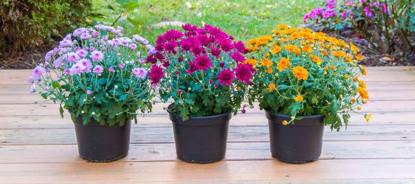
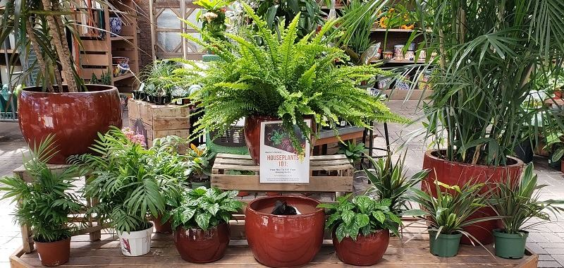
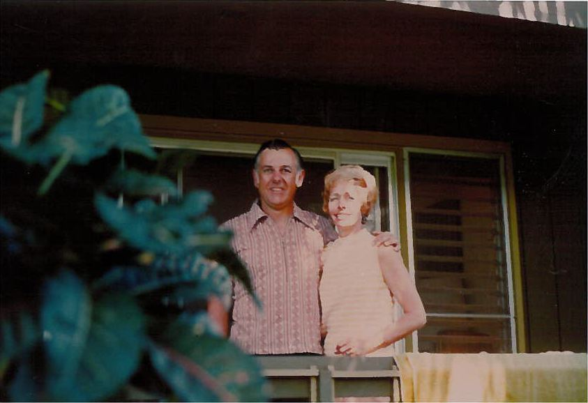

Northern Arizona’s family garden center
Warner’s Nursery is a family owned and operated garden center on Butler Avenue in Flagstaff, offering quality plants at reasonable prices, friendly service and expert gardening advice.
Our staff know Northern Arizona’s many microclimates and are here to help you become a successful high-country gardener.



Plants for every season
Annuals, perennials, trees & shrubs, edibles, bulbs & seeds and a tropical house full of houseplants.
Plants & services →Fall at Warner’s
Our pumpkin patch and hay maze are always free to explore, with carving pumpkins and “fancy” pumpkins in black, white and green.
Plan your visit →
Four generations
Started by Bill Warner and Dottie in Page, Arizona, and at 1101 E. Butler Ave in Flagstaff since 1995. Today Dottie’s granddaughters lead the family business.
Our story →